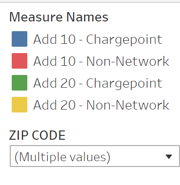

Predicting Electric Vehicle Registrations by ZipCode
The Question
With an increased focus on alternative energy and Electric Vehicle (EV) adoption on the rise, the question of infrastructure is at the forefront of the move toward a more sustainable future. While there are many factors that go into EV adoption, the accessibility and efficiency of public and private charging stations for plug-in EVs will play a critical role in this process. But how does an organization determine if they should invest in EV infrastructure? And if so, then where should they install these costly charging stations? This is where we believe Machine Learning (ML) can assist. Because of its ability to be trained on existing data and apply what it learns to novel data, ML can make predictions based on various features. And as importantly, it can do it in a fraction of the time it would take a human being to do the same work. With EV adoption, there is plenty of readily available data, but it is somewhat limited and inconsistent, depending on the progress a state or city has made regarding EV adoption and infrastructure. Additionally, much of this data and analysis lies behind paywalls, a hindrance to the democratization of data. However, with a sound ML model, we are able to make predications for new geographic as well as demographic areas.
The Analysis
By using available datasets for EV infrastructure and vehicle registration, as well as other data such as population and median income, we trained a linear regression ML model, produced predictions based on existing data, then created several additional predictions based on hypothetical increases in EV infrastructure. While the ML model showed a similar pattern of increases or decreases in EV registration predictions across zip codes, the predictions do not appear to contain the nuanced variations that one may need in order to make EV infrastructure decisions. However, the information elicited from the ML is a great starting point and has provided us with visualizations for a more EV-friendly world (7 states, currently). For our initial analysis, we used the ML model to make predictions for adding 2, 4, 5, 8, and 12 additional charging stations per zip code. These predicted numbers can be seen in the dashboard below. The ML model predicted a sharp increase in registrations for all variations, but with diminishing returns after adding 8 total charging stations. This became more apparent when we created predictions for 24,36, and 48 additional charging stations. With most zip codes currently containing fewer than 10 total charging stations, we thought it best to focus on the initial analysis for the visualization piece.
The Dashboard
Using the embedded Tableau Public workbook below, the user is able analyze current and ML predicted EV registration data, filtered on geography. However, due to a deficiency in monetary resources and limited calendric units, the current iteration of this interactive dashboard contains static data and limited features. And yet, Tableau Desktop does have the capability to make a connection to Python and other languages/programs used for ML, which allows for real-time, dynamic predications and visualizations. This could be an opportunity for future exploration and analysis. Feel free to explore the data for the 7 states and the myriad zip codes within to see how the ML predicted EV registration counts. The predictions can be accessed by hovering over a particular zip code. Additionally, there is data for the number of households and the median income within a zip code, both important factors in this discussion. And for increased comprehensibility, one can use a slide filter to view zip codes within a certain percent change from the current number of total EV stations to an increase in 2 total EV stations. This allows the user to home in on those zip codes that could give the most return on EV infrastructure investment.
Beyond the Model
While exploring the results from our initial model, we looked at the following additional features and predictions.
Additional Feature | Median Income
One of the features we considered in the Machine Learning model was Median Income. While there is not a one to one correlation, there is a clear threshold seeing an increase in registrations based on median income.
Calculating Additional Predictions
Registrations per Household (Madison, WI)
By using Calculation Fields in Tableau, we are able to create new measures to use in the prediction visualizations. Here we calculated the number of registrations per household, which is another way of visualizing registrations in a zip code.
Additional Feature | ChargePoint Type
This visualization predicts registration counts based on the addition of new charging stations based on Network Type: ChargePoint vs. Non-Networked. Based on these predictions it would be better to install ChargePoint network stations in order to increase registration.
Legend for ChargePoint Type Graph
Data Miners Team
Fahad Rehman

Collin LaVallee

John Okimosh

Jenni Madson